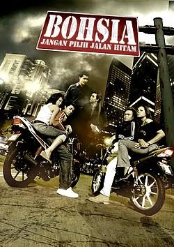
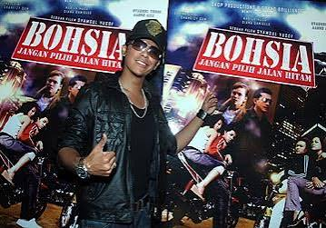

Tells the story of two bohsiah girls, Tasya and Amy, who are caught in the wild lifestyle of motorcycle racing and nightlife due to peer pressure and lack of parental guidance.

SYAMSUL YUSOF
( MUZ )

NABILA HUDA
( TASYA )

SALINA SAIBI
( AMY )

SHAHEIZY SAM
( ACAL )

AARON AZIZ
( AZAM )

DIANA DANIELLE
( GINA )

After directing his debut film, Evolusi KL Drift which was released in April 2008, Syamsul Yusof began his second film project which will be known as Bohsia: Jangan Pilih Jalan Hitam.
According to Syamsul, his second film will be different and focus on the problems of teenagers, especially bohsia. It was produced based on his observations and research on bohsia and mat rempit around the capital city of Kuala Lumpur.

Collections In its first weekend of release (23 26 April 2009), the film Bohsia collected more than RM1.6 million, ranking first in the film collection charts during that period. After 21 days of release, the total collection reportedly reached RM4.2 million
The review on the film portal Tupai.com.my gave it three out of five stars. Mainly stating that almost all the action scenes in the film were effective, the stunts were impressive, and the background music matched the scenes being watched, in addition to praising the acting talents of Nabila and Salina, but complaining that Syamsul's portrayal of the character seemed like "the elite's mat rempit"..